PHY-2105 • Electric Potential — Quiz-5 on 6 October 2026
Syllabus: slide problems 1–17 + Practice Sheet-5 problems 8, 10, 12, 16, 17, 18 (not struck this time). Assignment-2 is struck. The slide deck in this folder contains Problems 1–6 only; 7–17 are in the lecturer's fuller set. N.B. 3 excludes the potential-energy equation proof and potential-gradient applications; N.B. 4 includes graphs (Section 3).
The one idea for this chapter: potential is a scalar — add with signs, no components, no directions.
Pink = on the Quiz-5 syllabus. Every solution is laid out the same way: Given → 📐 Formula → numbered Steps → Answer. Write the formula line first in the exam too — it earns method marks even if the arithmetic slips.
Problem: An electron is moved upward 520 m by the electric force, in a downward field of 150 N/C. Find the change in its electric potential energy and in the electric potential.
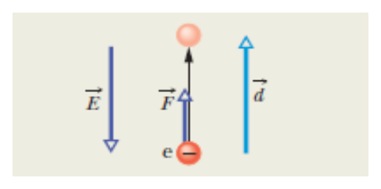
Slide figure.
work done by the electric force (θ = angle between force and displacement)
change in potential energy
change in potential (divide by the charge, sign included)
Step 1. Force on the electron. A negative charge is pushed opposite to \(\vec E\), so the force is up — the same way as the displacement (θ = 0°).
Step 2. Work done by the field:
Step 3. Change in potential energy:
Step 4. Change in potential:
Problem: \(q_1 = 12\) nC, \(q_2 = -24\) nC, \(q_3 = 31\) nC, \(q_4 = 17\) nC at the corners of a square of side \(d = 1.3\) m. What is \(V\) at the centre P?
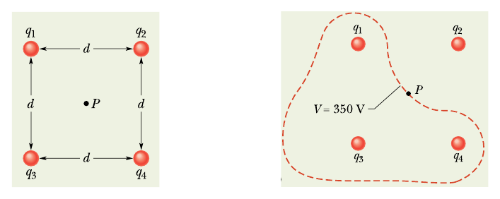
Slide figure.
Potential is a scalar: put each charge in with its sign and add. No components, no angles.
distance from a corner of a square to its centre (half the diagonal)
Step 1. Every corner is the same distance from P:
Step 2. Same r for all four, so add the charges first:
Step 3. Potential:
Problem: −1.0 μC at (0, 1) and +1.0 μC at (1, 0) (metres). At the origin find E (magnitude, direction), V, and the energy to bring +1.0 μC there from infinity.
field of a point charge — a vector: away from +, toward −
potential of a point charge — a scalar, keeps the sign of q
work to bring charge q from infinity (where V = 0) to a point at potential V
Step 1. Field of each charge (same |q|, same r):
Step 2. Directions: away from +q at (1, 0) → points left; toward −q at (0, 1) → points up. They are at 90°:
Step 3. Potential — just add with signs:
Step 4. Work:
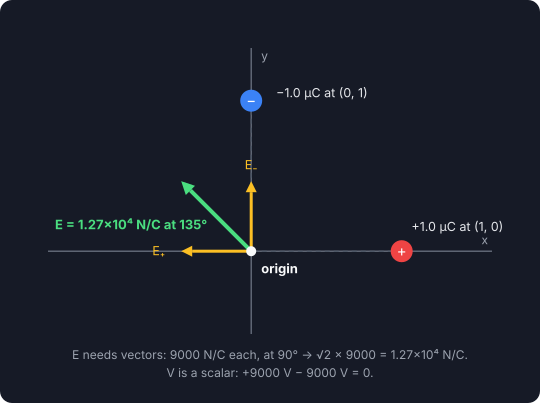
E needs vectors; V doesn't.
Problem: A proton (mass m, charge +e) and an alpha particle (mass 4m, charge +2e) approach each other with the same speed v from far away. How close do they get?
kinetic energy
potential energy of two charges a distance r apart
energy conservation: at closest approach all the kinetic energy has become potential energy (slide method)
Step 1. Total kinetic energy at the start:
Step 2. Potential energy at closest approach r:
Step 3. Set them equal and solve for r:
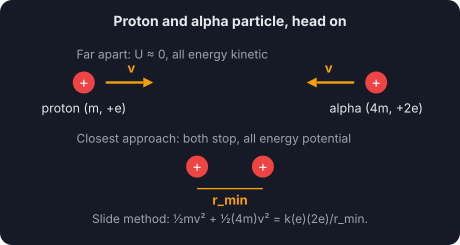
Before and at closest approach.
Problem: Same as Problem-1: the slide refers back to Sample Problem 24-1.
Identical to Problem-1 — same formulas (\(W = Fd\cos\theta\), \(\Delta U = -W\), \(\Delta V = \Delta U/q\)) and same numbers.
Problem: \(q_1 = +q\), \(q_2 = -4q\), \(q_3 = +2q\) at the corners of an equilateral triangle of side \(d = 12\) cm, \(q = 150\) nC. Find the potential energy U of the system.
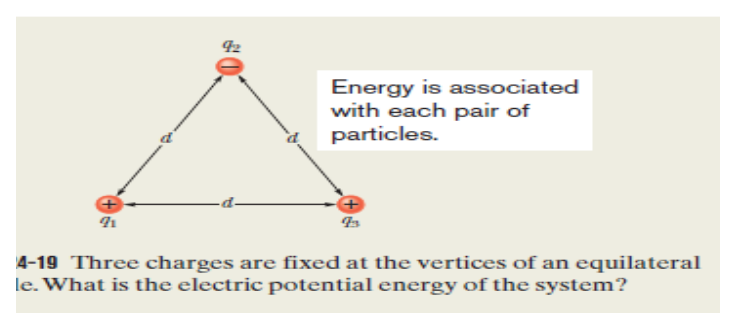
Slide figure.
energy belongs to each pair of charges; three charges → three pairs. Keep the signs.
Step 1. List the pair products (every \(r_{ij} = d\)):
Step 2. Add and substitute:
Problem: Four charges +2q, +4q, +2q and −2q are at the corners of a square of side 10 cm. (i) Draw the arrangement; (ii) find the net potential where the diagonals cross, with \(q = 57\times10^{-9}\) C.
Potential is a scalar: put each charge in with its sign and add. No components, no angles.
corner-to-centre distance of a square
Step 1. (i) The drawing. Put the charges on the corners in order, A → B → C → D, and mark the centre O where the diagonals cross:
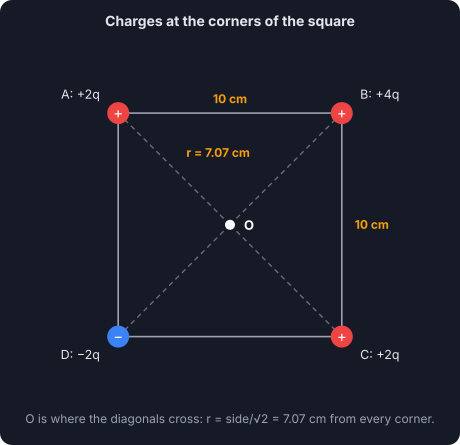
Arrangement for (i). Any order of the corners gives the same V at O, because every corner is the same distance away.
Step 2. Distance from each corner to O:
Step 3. Same r for all four, so add the charges first:
Step 4. Potential at O:
Problem: Calculate (i) the potential at a point 0.09 m from a charge of \(4\times10^{-7}\) C; (ii) the work done in bringing a charge of \(2\times10^{-9}\) C from infinity to that point.
potential of a point charge (V = 0 at infinity)
work to bring \(q_0\) from infinity to a point at potential V
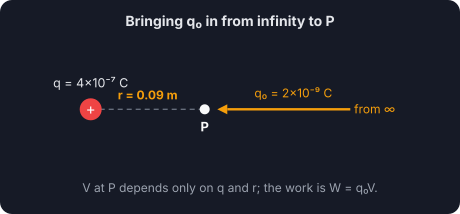
Step 1. (i) Potential:
Step 2. (ii) Work:
Problem: The potential difference between ground and a cloud is \(1.2\times10^9\) V. In electron-volts, what is the magnitude of the change in potential energy of an electron moving between them?
change in potential energy of a charge q moved through ΔV
energy gained by charge e moving through 1 V
Step 1. With the charge written as "1 e", volts × e gives eV directly:
Step 2. (In joules, if asked:)
Problem: Two equal charges of \(10\times10^{-5}\) C (drawn as −q) sit 10 cm either side of the origin; P is 10 cm up the y-axis. What is the magnitude of the potential at P?
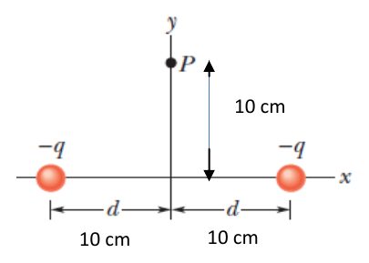
Sheet figure.
Potential is a scalar: put each charge in with its sign and add. No components, no angles.
distance from each charge to P (Pythagoras)
Step 1. Distance from each charge to P:
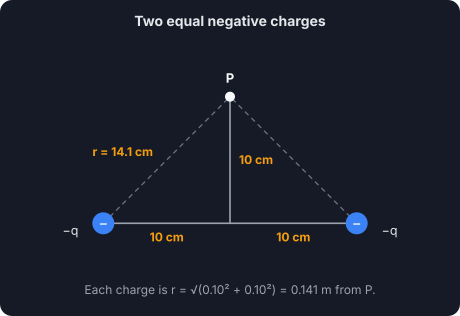
Step 2. Two equal charges at the same distance:
Problem: A charged particle produces a field of 5.0 N/C at a point 60 cm away. What is the magnitude of its potential there, and its charge?
field of a point charge
potential of a point charge
divide one by the other — a useful shortcut
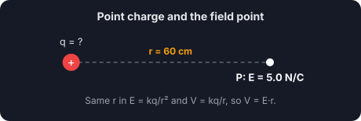
Step 1. Charge, from the field formula:
Step 2. Potential:
Problem: A fair-weather field of 100 N/C acts downward through the 100 km up to the ionosphere. What is the ionosphere's voltage?
uniform field: potential difference across a distance d along the field
Step 1.
Problem: NH₃ has dipole moment 1.47 D (1 D = \(3.34\times10^{-30}\) C·m). Find the potential 52.0 nm away along the dipole axis (V = 0 at infinity).
potential of a dipole far away (r ≫ separation); θ measured from the dipole axis
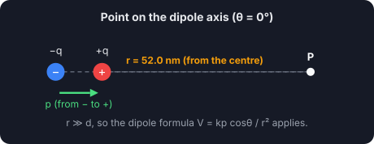
Step 1. Convert the dipole moment:
Step 2. Potential:
Problem: A proton (mass \(m_p\), charge +e) and an alpha particle (mass \(4m_p\), charge +2e) approach each other with the same speed \(v = 2\times10^8\) m/s from far away. How close do they get before turning around?
kinetic energy of each particle
potential energy of the pair
far apart U = 0; at closest approach the kinetic energy has all turned into U (slide method)
Step 1. Total kinetic energy:
Step 2. Potential energy at closest distance r:
Step 3. Equate and solve:
Step 4. Numbers:
Problem: An alpha particle (2 protons) heads straight for a gold nucleus (79 protons) and momentarily stops at r = 9.23 fm from its centre. What was its initial kinetic energy?
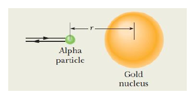
Sheet figure.
energy conservation: all K becomes U at the stopping point
Step 1.
Step 2. In electron-volts:
Problem: −1.0 μC at (0, 1) and +3.0 μC at (3, 0) (metres). At the origin find (i) the potential (V = 0 at infinity), and (ii) the energy needed to bring a +3.0 μC charge there from infinity.
Potential is a scalar: put each charge in with its sign and add. No components, no angles.
energy to bring \(q_0\) from infinity
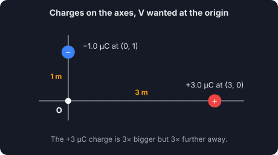
Step 1. (i) Potential at the origin:
Step 2. (ii) Energy:
Problem: \(q_1 = q_2 = +e\), \(q_3 = +2e\), \(a = 6.00\ \mu\)m (same figure as PPS-4 #13). Net potential at P?
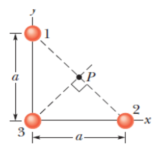
Sheet figure.
Potential is a scalar: put each charge in with its sign and add. No components, no angles.
midpoint of the hypotenuse is equidistant from all three corners
Step 1. All three charges are the same distance from P:
Step 2. Add the charges: \(e + e + 2e = 4e\).
Problem: Three protons and two electrons sit on a circular arc of radius r = 2.00 cm at the angles shown. What is the magnitude of the net potential at the centre of the arc?
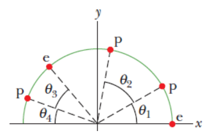
Sheet figure.
Potential is a scalar: put each charge in with its sign and add. No components, no angles.
Step 1. All five are the same distance from the centre, so add the charges first — the angles don't matter for a scalar:
Step 2.
Problem: An electron moves from A to B along a field line; the field does \(3.94\times10^{-19}\) J of work on it. Find \(V_B-V_A\), \(V_C-V_A\) and \(V_C-V_B\).
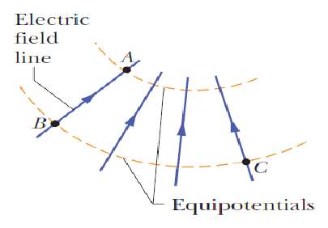
Sheet figure.
potential difference from the field's work
Step 1. (i)
Step 2. (ii) C is on B's equipotential, so \(V_C = V_B\):
Step 3. (iii)
Problem: How much work must we do to bring Q = +16e from infinity along the dashed line to the point shown, 2.00d from \(q_1 = +4e\) and d from \(q_2 = -q_1/3\)? d = 1.40 cm, θ₁ = 43°, θ₂ = 60°.
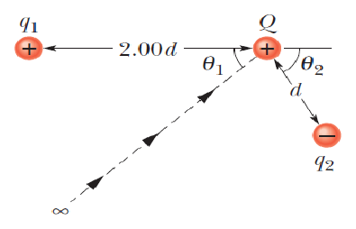
Sheet figure.
Potential is a scalar: put each charge in with its sign and add. No components, no angles.
work by us = Q × (potential at the end point); the path and the angles don't matter
Step 1. Potential at the end point:
Step 2. Work:
Problem: Net potential at P due to the four particles shown, with V = 0 at infinity, q = 5.00 fC and d = 4.00 cm.
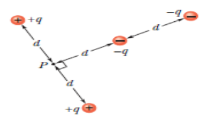
Sheet figure.
Potential is a scalar: put each charge in with its sign and add. No components, no angles.
Step 1. Add each charge over its own distance:
Step 2.
Problem: Point charges \(q_1 = 1\ \mu\)C, \(q_2 = -2\ \mu\)C and \(q_3 = 3\ \mu\)C are placed at the vertices of an isosceles right-angled triangle of side a = 0.5 m. Find the total potential energy of the system.
one term per pair, signs kept
Step 1. Draw it and find the three distances:
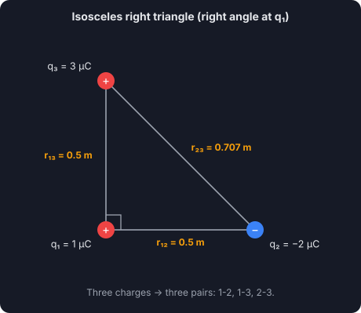
Step 2. Pair products:
Step 3. Add the pairs:
| Right angle at | U |
|---|---|
| q₁ (used above) | −0.0583 J |
| q₂ | −0.106 J |
| q₃ | −0.0794 J |
Problem: A rectangular array of charges (multiples of \(q_1 = 3.40\) pC and \(q_2 = 6.00\) pC) with a = 39.0 cm, as shown. With V = 0 at infinity, what is the net potential at the rectangle's centre?
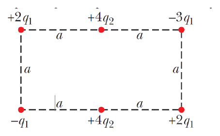
Sheet figure.
Potential is a scalar: put each charge in with its sign and add. No components, no angles.
Step 1. Distances from the centre C:
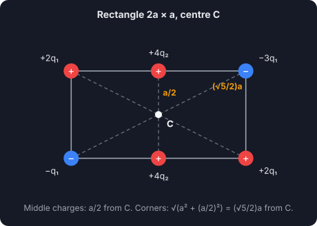
Step 2. Corners — all at the same distance, so add their charges:
Step 3. The two middle charges:
Problem: From the figure, find the potential at the centre and the potential energy of a +2.2 μC charge brought there. The electrons are 0.1 cm and the protons 0.6 cm from the centre.
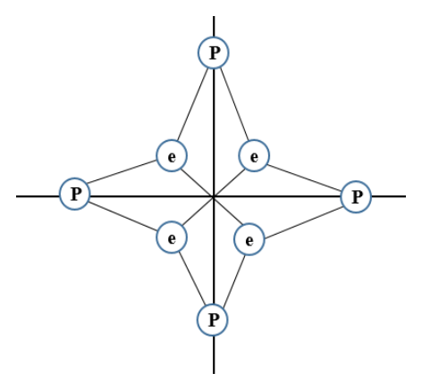
Sheet figure.
Potential is a scalar: put each charge in with its sign and add. No components, no angles.
potential energy of \(q_0\) at that point (= work to bring it from infinity)
Step 1. Potential at the centre (group the protons and the electrons):
Step 2. Potential energy:
The notice says graph drawings, field graphs and graphical analysis are included. These are the graphs this chapter can ask for.
Draw the equipotentials (dashed or gold) and field lines (arrowed) for a point charge, a uniform field, a dipole and two equal positive charges.
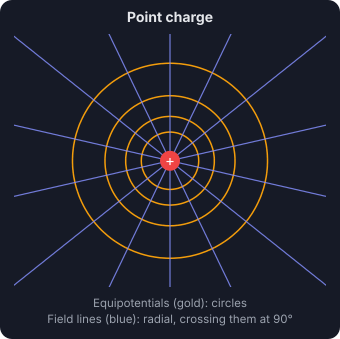
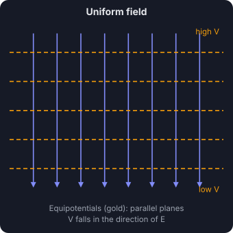
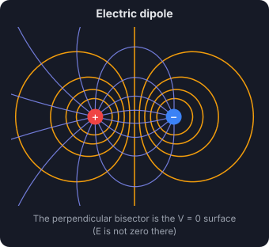
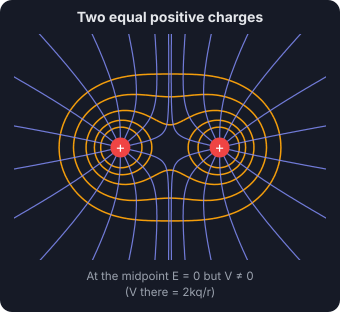
Rules to show in your drawing:
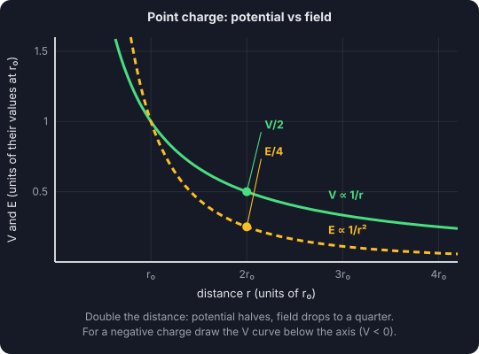
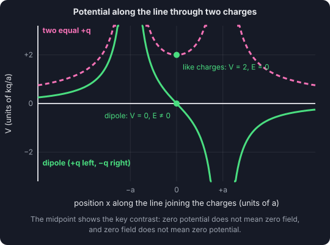
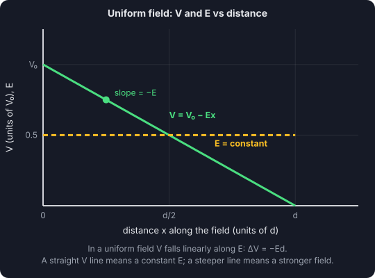
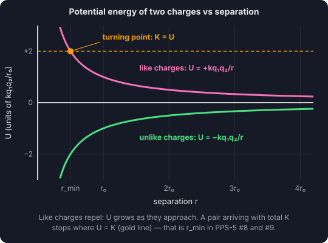